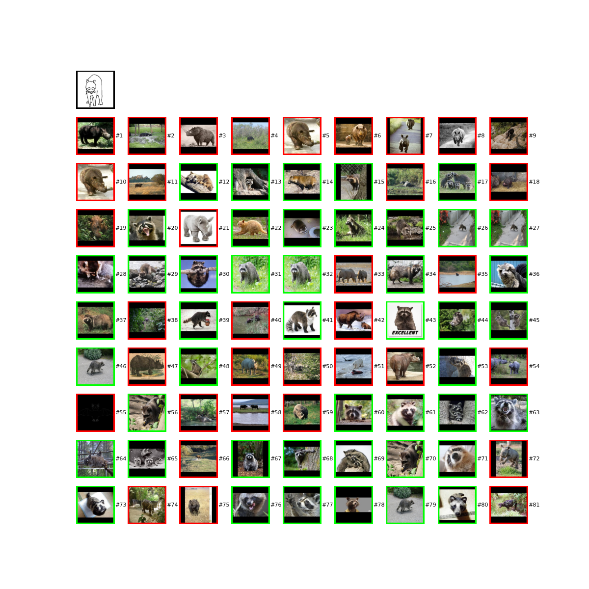
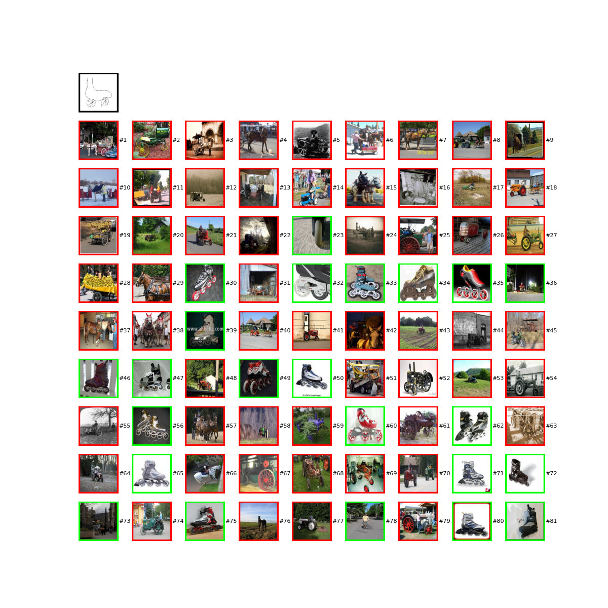

Abstract
We introduce a novel method for zero-shot, cross-domain image retrieval. Our key contribution
is a test-time Iterative Cluster-free Re-ranking (ICFRR) process that
leverages gallery-gallery feature information to establish
semantic links between query and gallery images. This en
ables the retrieval of relevant images even when they do not
exhibit similar visual features but share underlying semantic concepts. This can be combined with
any pre-existing cross-domain feature extraction backbone to improve retrieval performance. However,
when combined with a carefully chosen Vision Transformer backbone and
combination of zero-shot retrieval losses, our approach yields state-of-
the-art results on the Sketchy, TU-Berlin and QuickDraw
sketch-based retrieval benchmarks. We show that our re-ranking also improves performance with other
backbones
and outperforms other re-ranking methods applied with
our backbone. Importantly, unlike many previous methods,
none of the components in our approach are engineered
specifically towards the sketch-based image retrieval task
- it can be generally applied to any cross-domain, zero-shot
retrieval task. We therefore also present new results on zero-
shot cartoon-to-photo and art-to-product retrieval using the
Office-Home dataset.

With IFCRR

No ICFRR

With IFCRR

No ICFRR